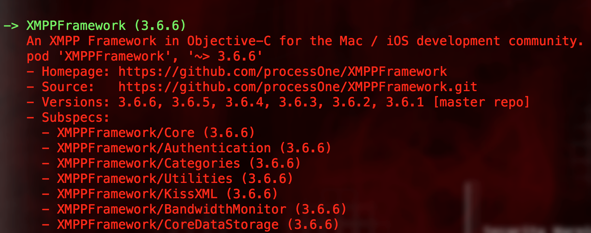
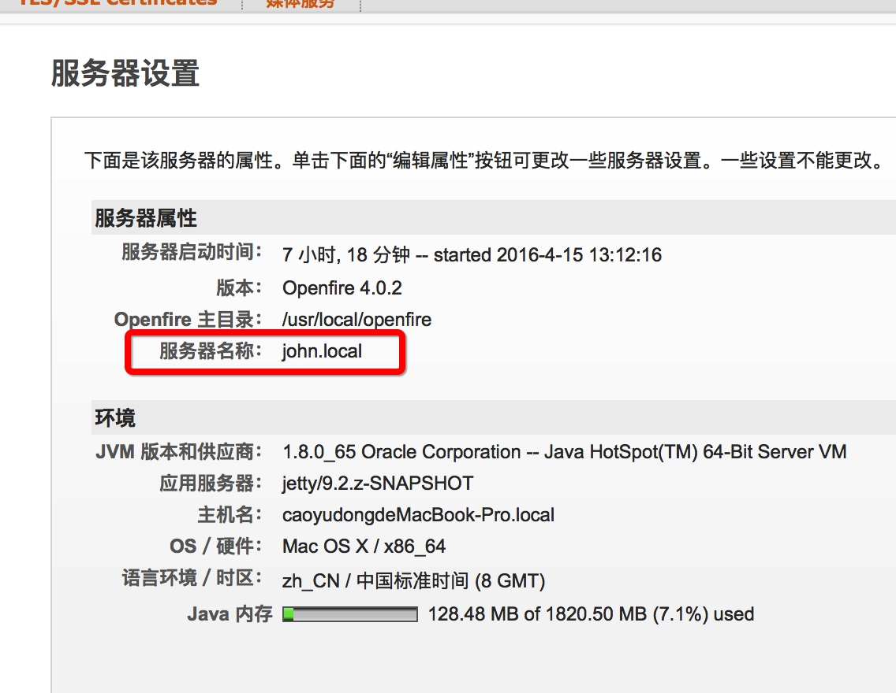
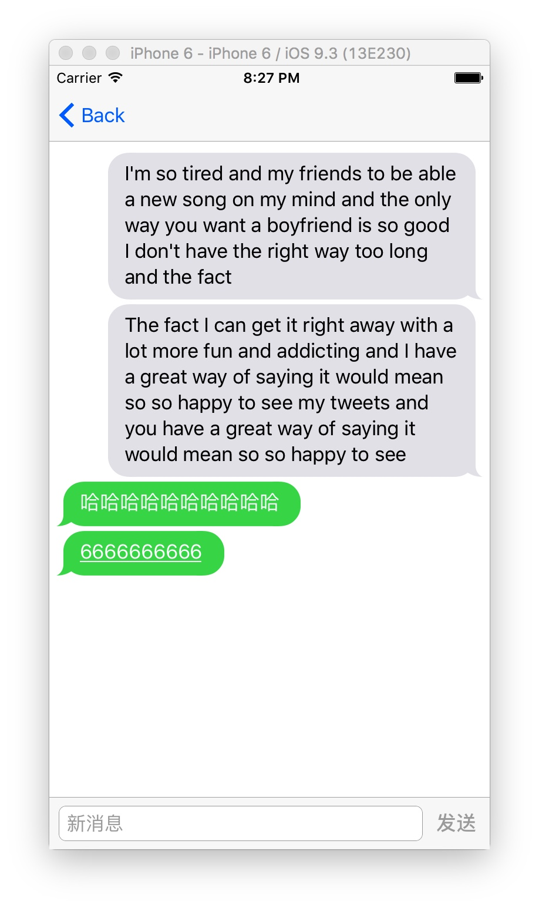
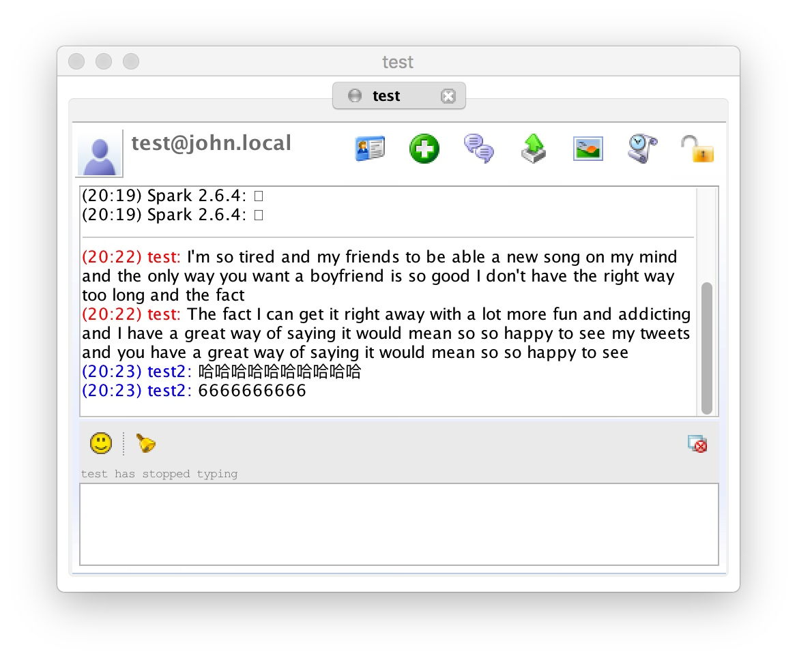

XMPP(Extensible Messaging and Presence Protocol 可扩展通讯和表示协议)，是一种基于标记语言的子集XML的协议，以Jabber协议为基础，而Jabber是即时通讯中常用的开放式协议。
简单来说，用这个东西可以实现APP间的聊天功能。
当然，我们不用自己实现一个XMPP，已经有人写好了XMPP Framework
安装
官方方法
按照官网的安装步骤：
- 先把最新的XMPPFramework的项目添加到自己的项目中。
- 添加 CocoaLumberjack 依赖
- 添加 CocoaAsyncSocket 依赖
- 添加 KissXML 依赖
- 添加 libidn 依赖
- 将以下文件夹添加到项目中
- Authentication
- Categories
- Core
- Utilities
…………………………
看到这里各位的心情应该跟我当时是一样的：什么鬼！！！为什么要加那么多东西！！！为什么不能直接支持CocoaPods？？？
然后，我怀着崩溃的心情，试了下
1 | pod search XMPPFrameWork |
结果
!!!!!!

居然是有的！！！
啊，你说这作者，明明支持CocoaPods，干嘛不在Readme里面顺便说一声呢？
CocoaPods
直接在Podfile里面添加
1 | pod 'XMPPFramework', '~> 3.6.6' |
然后
1 | pod install |
就可以愉快的使用了
如果项目原来有CocoaLumberjack
如果你跟我一样原来的项目里面有CocoaLumberjack，那么会踩到一个坑：
XMPPFrameWork 需要的的 CocoaLumberjack 版本为 1.9。。。。
然后降了版本安装好之后，你会惊奇的发现：
CocoaLumberjack用不了了！！！它的头文件<CocoaLumberjack/CocoaLumberjack.h>莫名其妙的失踪了！！！
目前我也不知道这种情况要怎么办……
代替方案是这样的：
去掉<CocoaLumberjack/CocoaLumberjack.h>引入DDLog.h可以勉强用用～
1 |
|
使用
首先需要通过调用，下面的东西链接服务器：
其中，JID是一个需要自己构造的对象，这个东西将作为你的唯一ID，一般情况下是这种样子：用户名@服务域名。resource是你发出去的信息的终端的标记可以不填。填了只是便于在数据库搜索用。官方解释: As a fixed length character field, a resource identifier is more easily stored in, searched on, and retrieved from a database.1
2XMPPJID *jid = [XMPPJID jidWithUser:@"username" domain:@"domain" resource:@"resource"];
[self.xmppStream connectWithTimeout:XMPPStreamTimeoutNone error:&error]上面构造的JID就是： username@domain
如果成功链接会调用代理方法
1
- (void)xmppStreamDidConnect:(XMPPStream *)sender{}
然后通过方法提供密码登录
1
[[self xmppStream] authenticateWithPassword:self.password error:&error]
如果成功登录会调用下面这个代理方法
1
- (void)xmppStreamDidAuthenticate:(XMPPStream *)sender{}
这时就可以开始正常聊天了～
发送消息
由于XMPP协议是基于XML的，所以所有发出的消息和接收的消息都是XML格式的
1
2
3
4
5
6
7
8
9NSXMLElement *body = [NSXMLElement elementWithName:@"body"];
[body setStringValue:message];
NSXMLElement *XMLmessage = [NSXMLElement elementWithName:@"message"];
[XMLmessage addAttributeWithName:@"type" stringValue:@"chat"];
//toUser是接收人的用户名
NSString *to = [NSString stringWithFormat:@"%@@domain", toUser];
[XMLmessage addAttributeWithName:@"to" stringValue:to];
[XMLmessage addChild:body];
[self.xmppStream sendElement:XMLmessage];接收消息
收到消息后会调用下面这个代理，可以在里面处理收到的消息。
1
2
3- (void)xmppStream:(XMPPStream *)sender didReceiveMessage:(XMPPMessage *)message {
NSString *txt = [[message elementForName:@"body"] stringValue];
}
示例
首先我在我电脑上建了一个open fire客户端。open fire是一个开源的支持XMPP的服务器，安装很简单，基本上是一路next，然后运行的时候链接下自己的手机壳就可以用了，网上很多例子，这里就不说了。
其次聊天界面我使用了一个别人写好的（因为自己写的太TM丑了），叫做JSQMessagesViewController，可以直接用CocoaPods安装，很好用。我究竟是有多懒……
聊天界面引入
1 |
然后声明几个属性，其中xmppStream用来储存链接信息，account,password用来储存自己的账户密码，toUser用来存放对方账户的账号。
1 | @property (strong, nonatomic) XMPPStream *xmppStream; |
链接服务器：
1 | - (void)connect { |
注册
因为要连接上才可以注册所以需要调用- (void)xmppStreamDidConnect:(XMPPStream *)sende函数
1 | - (void)xmppStreamDidConnect:(XMPPStream *)sender { |
登录
1 | - (void)xmppStreamDidConnect:(XMPPStream *)sender |
设置自己在线
1 | - (void)xmppStreamDidAuthenticate:(XMPPStream *)sender |
发送消息：
1 |
|
其中
1 | NSString *to = [NSString stringWithFormat:@"%@@john.local", user]; |
是用来构造接收用户的JID的，john.local应该改成服务器域名，这里这个是我本机open fire 自建的域名。

接收消息
1 |
|
效果图
手机端：

桌面端：（open fire自带的一个桌面客户端，测试用）
